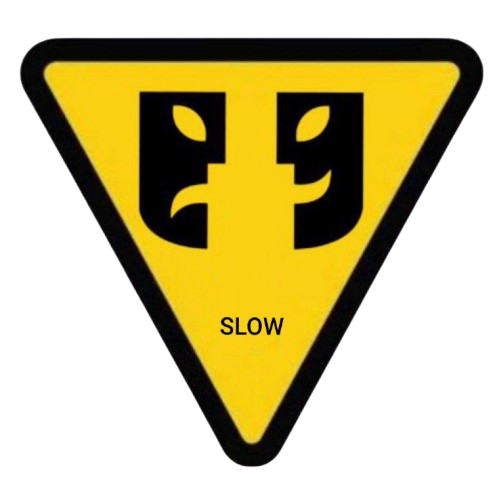

Buono, Pulito, Giusto.
Una filosofia della performance nata dal movimento Slow Food — teatro paziente, locale, ricorrente, senza marchio e senza controllori. I documenti qui sotto sono pensati per essere letti in ordine.
Read this page in English →